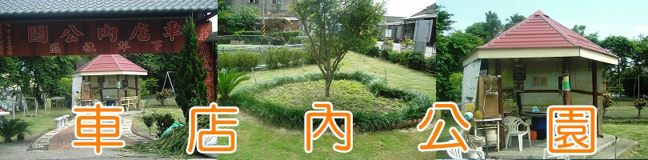
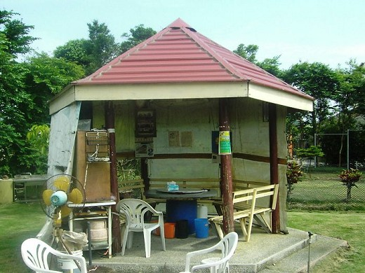
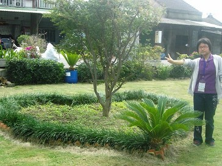

九十七年建造，公園裡的愛心是村長太太設計的，旁有一片大魚池，裡面養了吳郭魚，會用賣不完的土司和吐司邊餵給魚吃，有一座涼亭給人休息的，也有一些器材給小孩、老人運動玩耍的，每個月的月底，小組會去整理一次
 車店內公園雖占地不大，但車店內公園卻一直深植在下犁村村民的民心中，不管從遊樂器材到魚池到涼亭，甚至到釉綠的自然草皮，都給了我們最好的、亦是最優閒的休憩地點，每當到了例假日，此公園變成了小孩玩樂、老人下棋的最佳去處!!

|

彰化縣立線西國民中學、未來想像與創意人才培育計畫：黃巧婷、丁于容、姚家臻、顏劭勳 製作 |